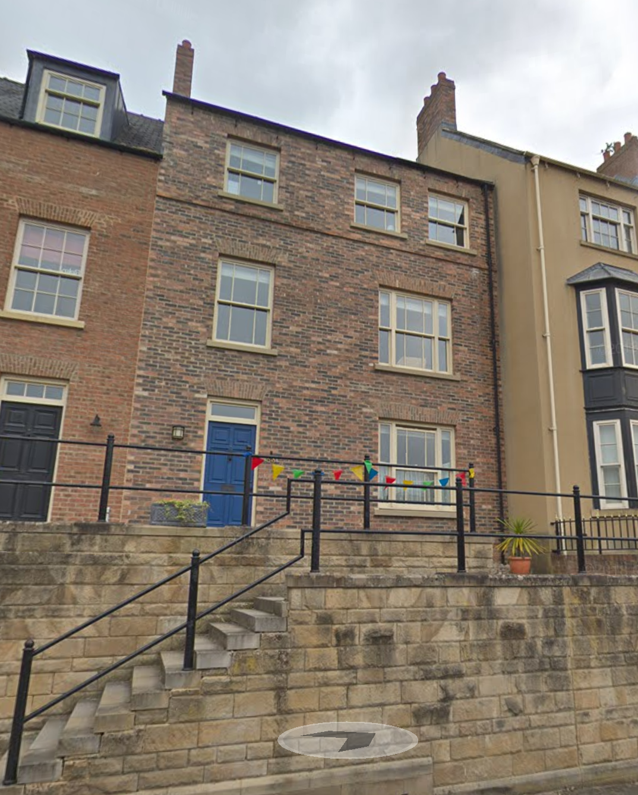

This is my house in Durham. This has been tested on Linux, therefore would recommend for best results. I have modelled the exterior of the house on the front and the back. The leaves in the plant pots on the front and back, the bird on the railings, the rat on the back garden move by holding down keys. I have also implemented something like a day night cycle which can be cycled through by holding down a key.
The reference image that I have used is below (as you can see I have limited the modelling to my own house; not the ones surrounding it):
